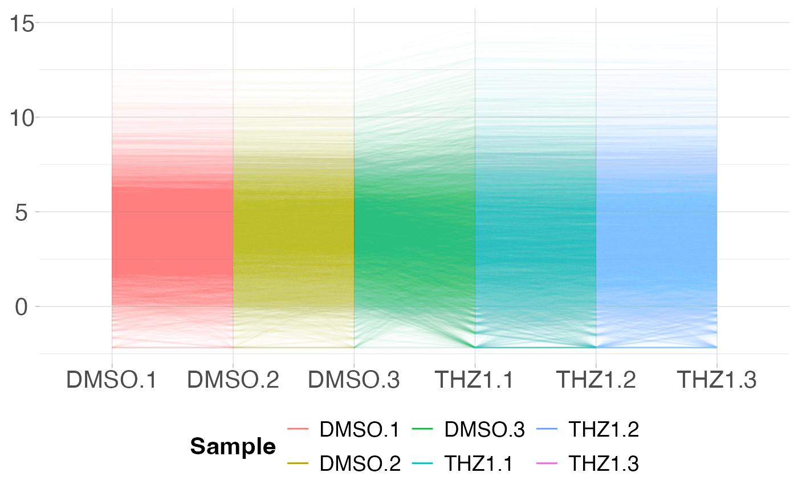
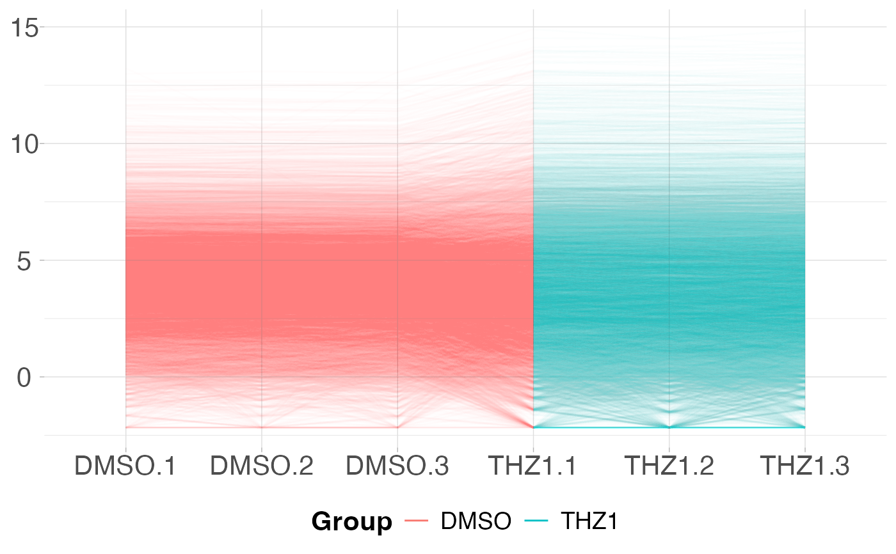

The parallel coordinates plot will display a line plot showing the expression value for gene on the y-axis by each sample on the x-axis.
plot_parallel(x, ...)
# S3 method for default
plot_parallel(x)
# S3 method for matrix
plot_parallel(x, metadata = NULL, colBy = NULL, removeVar = NULL, ...)
# S3 method for data.frame
plot_parallel(x, metadata = NULL, colBy = NULL, removeVar = NULL, ...)
# S3 method for SummarizedExperiment
plot_parallel(x, assay = "counts", colBy = NULL, removeVar = NULL, ...)gene by sample matrix or SummarizedExperiment object
Additional parameters passed to ggplot2::geom_line()
data.frame containing metadata per sample. rownames of metadata
metadata column used to color lines. Default NULL, every sample will get its own color.
Remove this proportion of features based on the variance across rows. Default NULL, all features are plotted.
assay of SummarizedExperiment object to be plotted. Default "counts".
ggplot object
# Create metadata for plotting
metadata <- data.frame(row.names = colnames(GSE161650_lc))
metadata$Group <- rep(c("DMSO", "THZ1"), each = 3)
# Plot the PCP for each sample -- passing alpha value to geom_line()
plot_parallel(GSE161650_lc, alpha = 0.01) +
theme_coriell()

# Plot the PCP by coloring each sample by Group from metadata
plot_parallel(GSE161650_lc, metadata, colBy = "Group", alpha = 0.01) +
theme_coriell()
